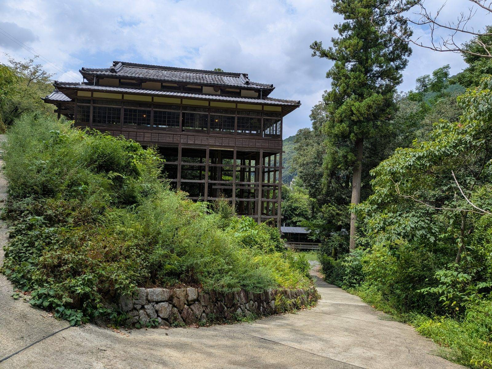

大洲の視点 ・ 出典: 少彦名神社とおすくな社中（公式サイト）、大洲市ホームページ、大洲市公式観光情報VisitOzu ・ 約17分で読める

菅田町に、神様が最期をむかえた地と伝わる神社があるんよ。全国でも珍しい。
崖からせり出した建物を、いちばん長いところで8mの脚が支えてる。
地元の人の修復が、ユネスコの賞をとったの。メモう！
3行でいうと調べた資料 47本
大洲市菅田町に、少彦名神社という神社がある。
正直、地元でもそこまで知られていない神社だと思う。でも調べてみたら、かなり面白い神社だった。
祭神は少彦名命（すくなひこなのみこと）。「おすくな様」と呼ばれ親しまれているそうだ。
『出雲国風土記』にも登場する神様らしい。大国主命と一緒に国造りをしたと伝わる、格式の高い 神様なんだそうだ。
面白いのは、ここが「神様が亡くなった場所」だという言い伝え。
少彦名命は道後温泉を発見したあと、肱川沿いを南下していたという。
その途中、深みにはまって命を落とし、この地に葬られたと伝わっている。
全国でも珍しい「神様終焉の地」なんだそうだ。神様が祀られている場所ではなく、神様が亡くなった 場所そのもの、というのが独特だと思う。
少彦名命は、医薬・温泉・産業を司る神様でもある。
だからなのか、境内には「薬草・薬木園」という一角があった。案内板には、2015年３月に 「目薬の木」が10本植えられたと書いてある。
医薬の神様に、ちゃんと薬になる木を供えているのが律儀だと思う。
歴史も古い。記録に残る最初の出来事は1441年、宇都宮次郎太郎という人物が「少比古廟」という 扁額を奉納したことだそうだ。
宇都宮という名字は、このころ大洲を治めていた一族と同じだ。伊予宇都宮氏は1331年に大洲へ入り、いまの大洲城の場所に地蔵ヶ嶽城を築いた。1441年は、その支配のさなかにあたる。ただ、宇都宮次郎太郎が一族の系図のどの人物にあたるのかを書いた資料は、調べた範囲では見つからなかった。
「次郎太郎」は本名ではなく、呼び名（通称）だ。江戸時代より前の人は本名で呼ばれるのを避け、別の呼び名を使った。はじめによく使われたのが、生まれた順の「太郎（長男）」「次郎（次男）」である。
二つ重ねた形にも読み方がある。徳川家康の先祖の松平親忠は、「次郎」と呼ばれた家の三男だったので「次郎三郎」と呼ばれた。同じように読めば、次郎太郎は「次郎の家の太郎（長男）」になる。ただ、家康も先祖と同じ「次郎三郎」を名乗ったように、呼び名は親から子へ受け継がれることもある。生まれた順どおりとは限らない。
1583年には、正岡宮内大輔によって再興されたと伝わっている。
今の姿に近づいたのは昭和に入ってから。1928年に奉賛会が設立され、1931年から神殿・拝殿・ 社務所などの造営が始まった。
神殿は1932年に完成。そして1934年、「参籠殿」が竣工した。
この参籠殿こそ、少彦名神社で一番の見どころだと思う。
参道沿いの北斜面に建てられていて、床面積の約９割が山の崖にせり出す「懸造り」という構造になっている。
迫り出した部分を支える脚の長さは、最長で8.3メートルにもなるらしい。
伝統的な「貫工法」という組み方と、近代的な金属ボルトを組み合わせて建てられているそうだ。
上の階はガラス戸が３面に巡らされていて、開放的な造りになっている。
この建物、老朽化で一時は使えなくなっていたそうだが、多くの寄付によって2014年に修復された。 今は結婚披露宴や研修会にも使われているという。
そして2016年５月30日、参籠殿は大洲市指定文化財に指定された。
同じ2016年の９月には、この修復活動がユネスコのアジア太平洋文化遺産保全賞で最優秀賞を 受賞している。
それだけではない。2013年には、ワールドモニュメント財団の「2014年World Monuments Watch （文化遺産ウォッチ）」にも選ばれていた。
一地域の神社の建物が、国際的な文化遺産の枠組みで評価されているというのは、正直かなり 意外だった。
地元の人たちが「おすくな社中」という団体を作り、2002年からコツコツ保存活動を続けてきた 成果なんだと思う。
ちなみに、菅田町には同じ「少彦名神社」という名前の神社が、もう一つある。菅田町菅田の神社で、こちらにも神様がこの地で亡くなったという話が伝わっている（あとの節で書く）。
春の大祭は４月15日、秋の例大祭は10月15日。境内は無料で終日開放されていて、土日祝日は ボランティアガイドもいるそうだ。
神社としての知名度はそう高くないかもしれない。でも、由緒や建築、受賞歴まで含めると、 大洲の中でもかなり濃い場所だと思う。
「ユネスコの最優秀賞」と言われてもピンとこなかったので、この賞そのものを調べてみた。
正式には「ユネスコ アジア太平洋文化遺産保全賞」。文部科学省の説明によると、アジア太平洋地域における歴史的建造物の保全について、民間主導の優れた取り組みを顕彰する賞だ。行政ではなく民間の努力を評価する、という性格が強い。
同じ賞を受けた日本の建物を探すと、横浜赤レンガ倉庫や、千葉県大多喜町の役場庁舎などが出てくる。
全国区で名前の知られた建物と、同じ枠組みで評価されたことになる。
しかも大洲の場合、受賞したのは建物そのものというより「地元有志が寄付を集めて修復した」という活動のほうだった。
おすくな社中が2002年から積み上げてきた活動が、崖にせり出す木造建築を残したうえで、国際的な評価まで引き寄せたということになる。
「神様終焉の地」と聞いて、どの本にそう書いてあるのかが気になった。調べると、記紀にはそう書かれていない。
記紀が伝えるのは、少彦名命が最後に常世国（とこよのくに）へ渡ったという筋だ。粟の茎に登り、その茎に弾かれて飛んでいった、という話も伝わる。
去った、とは書かれている。死んだ場所は書かれていない。
愛媛に関わる古い記述は『伊予国風土記』の逸文にある。鎌倉時代の『釈日本紀』などに引用されて残ったものだ。
愛媛県史はその内容をこうまとめている。大穴持命（大国主命）が、仮死状態の少彦名命を蘇生させようと、大分の速見の湯を地下の樋で引いてきて入浴させた。すると少彦名命は生き返り、元気よく足踏みをした——。
これが道後温泉のおこりとして語られる話である。
つまり少彦名命は、道後で一度生き返っている。大洲に伝わる話は、その続きに位置している。
一度は湯で助かった神様が、二度目は助からなかった場所。そう並べると、この神社の立ち位置が少し見えてくる。
ただ、由緒が文献にはっきり残っているわけではない。愛媛県神社庁の登録では、この神社の由緒は「未詳」となっている。
大洲市の文化財ページの書き方も慎重だ。
少彦名神社は、昭和3（1928）年、少彦名命（日本神話の神）の終焉とされる地を崇敬するために計画された神社です。
大洲市ホームページ「少彦名神社参籠殿」
先に伝承があり、昭和になってから社殿が建った。順番はそういうことになる。
境内は山にそって縦に長い。参籠殿、拝殿、中殿、そして山上の御陵（本殿）。参籠殿から御陵までは、直線で約870メートル離れている（各建物の緯度経度から計算した）。
神社であると同時に、墓所でもある。それがこの神社の形だ。
少彦名命の名前が付いた神社は、全国にいくつもある。ウィキペディアで「少彦名神社」を引くだけでも、青森県から愛媛県まで15社が並ぶ。記事が立っている神社だけの一覧なので、実際はもっと多い。
名前が同じなのは、同じ神様を祀っているからだ。たとえば大阪・道修町の少彦名神社は、京都の神社から少彦名命の分霊（神様の分身）を迎えて始まった（あとの節で書く）。どれかが本物で、ほかが偽物、という関係ではない。
違いが出るのは、その土地に伝わる話のほうだ。大洲の神社の公式サイトは、亡骸を葬った場所まで書いている。
その亡骸を埋葬したのが現在の梁瀬山と言われており、この少彦名神社は全国でも珍しい「神様終焉の地」として建立された。
少彦名神社とおすくな社中（公式サイト）
梁瀬山は、参籠殿や御陵のある山の名前である。
そして、同じ話は菅田町の中にもう一つある。菅田町菅田の、もう一つの少彦名神社だ。愛媛県神社庁の登録では、こちらの由緒はこう結ばれている。
ある日、命は三町程下った急流を渡って対岸に至らんとしたがのみこまれ常世國にいってしまう。土民達が亡骸を壺に入れ埋葬したと伝えられている。
愛媛県神社庁「少彦名神社」（大洲市菅田町菅田）の由緒
こちらでは、神様は道後から南へ下り、この地で長く薬をつくって人々の病気を治していたことになっている。川を渡ろうとしてのみこまれ、亡骸が葬られた、という筋は梁瀬山の話と同じだ。
大洲の外ではどうか。少彦名命が最後にいた場所として知られるのは、鳥取県米子市の粟嶋神社だ。『伯耆国風土記』の逸文に、少彦名命が粟に弾かれて常世の国へ渡ったとある。鳥取県神社庁は、ここを常世の国へ渡る「最後の地」と紹介している。
ただ、米子の話は「去った」であって、「亡くなって葬られた」ではない。前の節の記紀も、常世の国へ渡ったと書くだけだった。
亡くなって、亡骸を葬った。そこまで言う伝承は、調べた範囲では、菅田町の2つの少彦名神社のほかに見つからなかった。全国の神社の由緒をすべて読んだわけではないので、「ここだけ」とは言えない。ただ、「全国でも珍しい」という書き方は、大げさではなさそうだ。
懸造りは、日本の寺社に独特の様式とされる。実地に踏査している人の数え方では、全国に300か所以上ある。
記録に残るいちばん古い例は、石山寺本堂、長谷寺本堂、清水寺本堂。いずれも平安時代の中ごろまでには建っていたとみられる。
代表的なものと並べると、参籠殿の位置がわかりやすい。
建物清水寺 本堂（京都市）
建物三仏寺 投入堂（鳥取県三朝町）
建物笠森寺 観音堂（千葉県長南町）
建物少彦名神社 参籠殿（大洲市）
目を引くのは年代だ。
懸造りの代表例に挙がる建物は、たいてい平安から江戸のもの。参籠殿は昭和9年である。
ユネスコの受賞理由も、参籠殿を「20世紀の懸造り建築」と呼んでいる。古いから価値があるのではない。昭和になってもこの工法で建てた、という点が珍しいのだ。
大きさの数字は、資料によって食い違う。
市の観光サイトは脚の長さを最長8.3メートルとする。一方、2013年12月の市議会で稲田宏教育部長は「高さ約13メートルにもなるかけづくりの柱」と答弁している。同じ議会では、斜面の傾斜を30度としている。
どの数字が建物のどこを測ったものかは、公開されている資料からは分からなかった。仮に議会の数字を採るなら、参籠殿の柱は清水の舞台とほぼ同じ高さになる。
なお、大洲市内に残る懸造りは3つある。臥龍山荘の不老庵、如法寺の毘沙門堂、そして参籠殿。市はこのなかで参籠殿が「最大規模」だと書いている。
不老庵は2016年、臥龍山荘の一部として国の重要文化財になった。同じ工法の建物が、肱川沿いのせまい範囲に3つ残っている。
修復のお金がどこから出たのか。ここが、この神社のいちばん現代的な部分だと思う。
2013年12月の市議会で、参籠殿の修復が取り上げられている。屋根の一部が落ち、雨漏りと床の傷みが激しい、という状況だった。
問われたのは2つ。市の文化財に指定して修復を支援できないか。遊歩道や防火用の水場を整備できないか。
稲田宏教育部長の答弁は、はっきりしていた。
指定文化財でない民間の所有物に対しての支援はできませんので、御理解いただきたいと思います。
2013年12月 大洲市議会、教育部長の答弁
遊歩道については市としては整備できませんので、御理解いただきたいと思います。
2013年12月 大洲市議会、教育部長の答弁
しかも当時は、指定の手続きに必要な権利関係の整理ができていなかった。答弁では「現在所有者等がはっきりしない」ため、地元の団体が調べているところ、と説明されている。
修理の仕方によっては文化財としての価値が損なわれる、という助言も文化庁の調査官から出ていた。如法寺仏殿の保存修理に携わっていた主任技術者に指導を仰ぐよう促されている。
お金は、外から来た。
愛媛新聞2014年12月22日付によると、アメリカのワールド・モニュメント財団が、バーモント州のフリーマン財団の協力で16万5,000ドル（当時の記事で約1,900万円）の助成を決めた。国内の寄付と合わせた修復費は約3,800万円で、全額が寄付だったという。
この3,800万円という額は、同紙の記事を引用したブログでしか確認できなかった。ただ1,900万円のほうは、2017年9月の市議会でも同じ額が語られている。ある議員の発言である。
参籠殿一つとってもそうじゃないですか。大洲市が何も補助金も出さなかったけれど、アメリカの財団から1,900万円ほどの補助金をもらうと。
2017年9月 大洲市議会、議員の質問
では、なぜアメリカの団体が、大洲の神社にお金を出したのか。順番に見ると、お金はいきなり来たわけではなかった。
まず2013年10月、参籠殿は「ワールド・モニュメント・ウォッチ」に選ばれた。ワールド・モニュメント財団は、1965年にできたニューヨークの民間の非営利団体だ。ウォッチは、この財団が1996年から2年ごとに出している、保存や修復を急ぐ必要がある文化遺産のリストである。
財団の日本語の説明によると、リストの目的は支援を世界に呼びかけることにある。申し込みは、文化財を守る個人や団体、政府などが財団へ直接する。参籠殿が載った2014年版には、41の国と地域から67件が選ばれた。参籠殿をだれが申し込んだのかは、公開されている資料からは分からなかった。
選ばれただけでは、お金は出ない。2013年12月の市議会で、修復を取り上げた議員はこう話している。
財団に危機遺産リストに選出されても、修復資金が出るわけでもありません。
2013年12月 大洲市議会、議員の質問
助成が決まったのは、その1年後だ。財団は2014年12月18日、東京で助成を発表した。発表文には、21日に神社で式を開いて伝えるとある。発表の題にも「16万5,000ドル」の額が入っている。愛媛新聞の日付と額は、この発表と合う。
財団が発表文に書いた理由は、3つにまとめられる。懸造りの多くは明治より前の建物で、1934年の参籠殿は20世紀の数少ない例であること。肱川を見下ろす梁瀬山の中腹に、ガラスの壁で建つ姿が「空中の城」のようであること。そして修復がうまくいけば、懸造りを丸ごと直す初めての例になり、ほかの懸造りを救う方法づくりにもつながること。
発表文には、もう一つの名前が出てくる。助成は「フリーマン財団の支援を受けて」出すとある。フリーマン財団は、中国で始まった保険の会社（のちのAIG）を育てたマンスフィールド・フリーマンの遺産でつくられた財団だ。アメリカと東アジアの理解を深める教育や交流に、資金を出している。
お金は、地元の「おすくな社中」と修復の実行委員会の取り組みを支えるために出された。建物の修理だけでなく、境内の整備や、文化遺産を知ってもらう催しにも使うとされた。財団の記録には、ボランティアが修復中に瓦800枚を洗ったことや、昔の大きなのこぎり「大鋸（おが）」を挽く催しを開いたことが残っている。
ちなみにこの財団は、その前年の2012年、隣の八幡浜市の日土小学校の修復にも賞を出している。台風で傷んだ校舎を、壊すか残すかで2年議論したあとに直した例だ。南予の古い建物は、続けて同じ財団の目にとまっていた。
市が参籠殿を指定文化財にしたのは、修復が終わったあとの2016年5月30日である。
市の予算がついたのは、さらにその翌年。2017年6月の補正予算で、受賞を祝う記念式典の経費の一部を市が負担することになった。清水裕市長は提案理由でこう説明している。
最優秀賞は国内初めてということであり、参籠殿の修復にかかわられました皆様に心からの敬意を表する次第でございます。
2017年6月 大洲市議会、市長の提案理由の説明
ユネスコが公開している2016年の受賞者一覧を見ると、受賞したのは13件。オーストラリア、中国、インド、イラン、日本、パキスタンの6か国からだった。
賞には4つの段階があり、別枠で新設計部門が置かれている。いちばん上の最優秀賞は1件だけで、それが参籠殿だった。
日本からの受賞も、この年はこの1件だけである。
受賞理由の書き出しに、日本語の資料では見かけなかった一文がある。参籠殿は「20年にわたって放置されていた」ところを救い出された、とある。
古い工法をよみがえらせ、伝統的な材料にこだわり、最新の技術的な分析を組み合わせた。それによって保存の質と本物らしさが最も高い水準に達した——ユネスコの評価はそう続く。
清水裕市長は2016年12月の市議会で、この賞についてこう説明している。日本では2010年に横浜赤レンガ倉庫が優秀賞を、2013年に千葉県大多喜町役場が功績賞を受けているが、最優秀賞は日本で初めてである、と。
同じ賞でも段階が違う。参籠殿は、そのいちばん上を取っている。
少彦名命を祀る神社は各地にある。なかでも知られているのが、大阪市中央区道修町の少彦名神社だ。
道修町は江戸時代から薬を扱う店が集まった町である。1780年、薬の商人たちが祀っていた中国の薬の神・神農炎帝に、京都の五條天神社から少彦名命の分霊を迎えて合わせて祀ったのが始まりとされる。
こちらの拝殿は1910年の建物で、2000年12月4日に国の登録有形文化財になっている。木造平屋建、銅板葺、建築面積26平方メートル。
毎年11月22日と23日の神農祭では、張子の虎が授けられる。1822年にコレラが流行したとき、薬の商人が「虎頭殺鬼雄黄圓」という丸薬をつくり、張子の虎とともに無料で配ったのが由来という。
大阪は、薬を売る人たちが自分たちの守り神として祀った神社。大洲は、神様が亡くなったとされる場所そのもの。同じ神様でも、成り立ちがまるで違う。
大洲でも「薬」は何度か市議会の議題になっている。
2008年6月には、遊休農地でヨモギやドクダミ、ウコンを育て、「薬草のまち大洲」として発信してはどうか、という提案が出た。
2016年3月には、「医薬の神様、大洲少彦名神社のある大洲が先駆者となり」、産学官で生薬日本一を目指すべきだ、という質問があった。
答弁によると、実際に愛媛たいき農協が生薬の契約栽培に取り組んでいる。主な作物はミシマサイコ、サンショウ、薬用ハッサク。延べ150人ほどの生産者が栽培しているという。
境内の薬草・薬木園は、この流れの中にある。
医薬と温泉の神様の名前は、大洲の別の場所にも使われていた。少彦名温泉である。
1999年2月に掘削され、2002年12月に市が取得した。市の特別会計で運営し、パイプで臥龍の湯に送っていた。臥龍の湯が開いたのは2004年9月である。
もとの持ち主は、市ではない。愛媛新聞は、経営難に陥った第三セクターの「大洲温泉」から市が買い取った源泉だと書いている。
名前からすると、神社の湯を引いていたように聞こえる。だが、源泉は神社の境内ではない。同じ記事によると、臥龍の湯までの配湯管は約500メートルだった。臥龍の湯から参籠殿までは、直線でも約1.2キロある（両方の緯度経度から計算した）。
ただ、神社とまったく無縁の場所でもなさそうだ。2023年3月の市議会で、市は梁瀬地区の浸水対策を説明する中で「温泉源泉地を囲むように輪中堤が整備されます」と話している。神社の公式サイトも、神社の山を「梁瀬山」と呼んでいる。この源泉地が少彦名温泉だと名指しした資料や、温泉の名前の由来を書いた資料は、調べた範囲では見つからなかった。
その温泉が、2023年に温泉でなくなる。
同年5月の成分検査で温泉法の基準を満たす成分が検出されず、市は温泉法上の廃止を届け出た。温泉という名前が使えなくなり、臥龍の湯への湯の供給も止まった。
臥龍の湯そのものは、いまも営業している。愛媛新聞によると、2023年6月20日から地下水などを使うスーパー銭湯として続けている。いまの公式サイトも、自らを「スーパー銭湯」と書いている。
掘って24年。医薬と温泉の神様の名を借りた市営温泉は、そこで役目を終えた。
2025年12月の市議会に、東大洲に大きな道の駅をつくり、そこを拠点に日帰りバスツアーを回してはどうか、という提案が出た。
その行き先のひとつが、こう呼ばれている。
一寸法師終えんの地参籠殿見学
2025年12月 大洲市議会、議員の質問
少彦名命は、小さな神様として描かれる。小さな体で舟に乗って海を渡ってくる姿から、一寸法師のもとになったという説がある。
大洲市議会の会議録を「参籠殿」で検索すると、2013年12月から2025年12月までに16回の会議で名前が出てくる。
地元でもそこまで知られていない、と最初に書いた。ただ市議会の中では、この12年、名前が挙がり続けている建物でもあった。
この記事をサイトに掲載した日: 2026/08/16